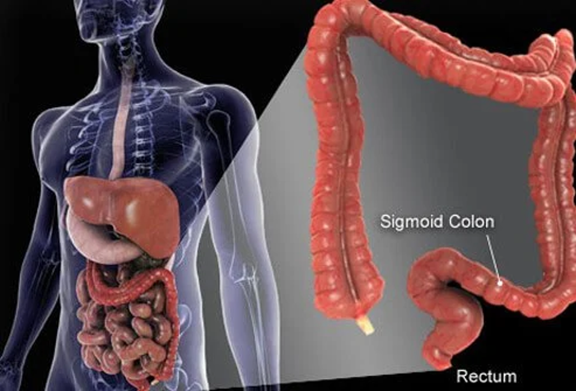
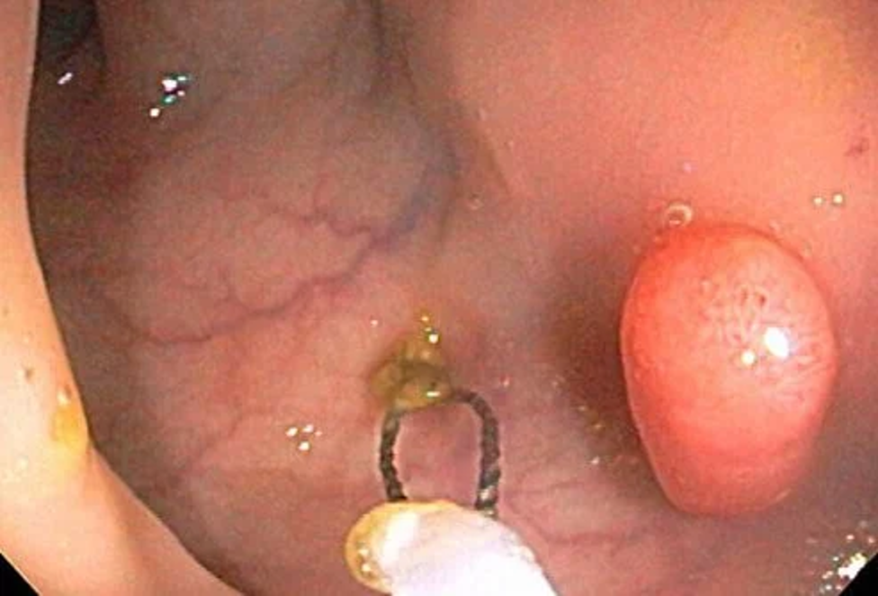
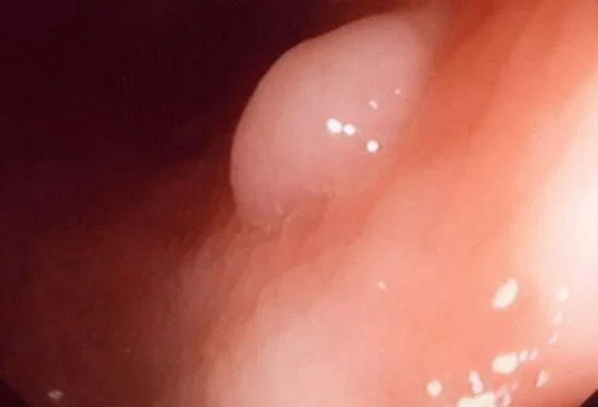
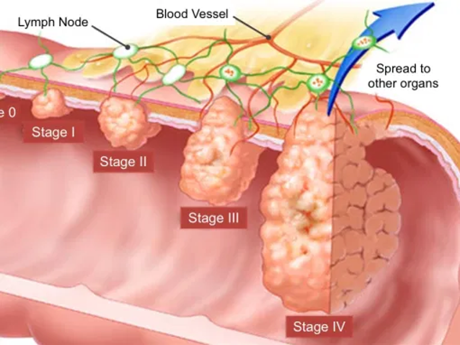

Colon/ Colorectal Cancer :
Colon Cancer also known as colorectal cancer begin when the normal replacement activity of colon lining cells goes uneven, and inaccuracy occur frequently in cell division. When this occurs, the Colon lining cells begin to divide separately of the normal checks and balances that control cell growth. When these abnormal cells enlarge and split, there occurs the growth of a small clump of cells called Polyps within the colon. As polyps grow, supplementary genetic mutations further damage the cells.
When these precancerous tumors develop into the wall of the tube instead of growing into the middle of the space and capture other layers of the large intestine the precancerous polyp turns cancerous.
Colorectal cancer starts to grow locally and spread through the wall of the intestine and occupy nearby structures, making the primary tumor a problem and hard to remove. Spread of tumour can create other symptoms like pain or fullness, blockages of the colon, perforation of the colon, for the nearby structures.
As the cancer develops it starts the operation of metastasis, discarding multiple cells in a day into the blood and lymphatic system that may lead the cancers to form in distant locations. Colorectal cancers most commonly spread to local lymph nodes before traveling to distant organs. Once local lymph nodes are extended up to the liver, the metastatic spread may affect abdominal cavity, and the lung adversely.

Colon cancer (bowel cancer) facts :
Risk factors :
Common risk factors for colorectal cancer include increasing age, African-American race, a family history of colorectal cancer, colon polyps, and long-standing ulcerative colitis.
Signs and Symptoms of Colon cancer :
Colorectal cancer may be present in the intestine for many years before it shows the symptoms of development. Colorectal cancer-related symptoms are multiple and casual which include :
Other ailments such as ulcerative colitis, peptic ulcer disease, irritable bowel syndrome (spastic colon), Crohn's disease, diverticulosis can have symptoms that imitate bowel cancer.
Symptoms differs according to the location of the tumor in the large intestine.
Right Colon Tumor :
Left Colon Tumor :


Diagnosis and Tests of Colon Cancer :
Generally, Colonoscopy is conducted to confirm the diagnosis and locate the tumour when colon cancer is suspected.
Stages of Colon Cancer: :
When colorectal cancer is diagnosed, additional tests are performed to determine the extent of the disease. This process is called staging. Staging determines how advanced colorectal cancer has become. The staging for colorectal cancer ranges from stage I, the least advanced cancer, to stage IV, the most advanced cancer.
The process of staging and extra tests are conducted to examine the spread of the disease when Colorectal cancer is diagnosed. Staging indicates the level of advancement of colorectal cancer. The Stage of Colorectal cancer ranges from stage I (minimal cancer) to stage IV, (most advanced cancer)

Stage I :
Colorectal cancers involve only the innermost layers of the colon or rectum. The likelihood of cure (excellent prognosis) for stage I colorectal cancer is over 90%.
STAGE II :
Cancers exhibit greater growth and extension of the tumour through the wall of the colon or rectum into adjacent structures.
STAGE III :
Colorectal cancers manifest the spread of cancer to local lymph nodes.
STAGE IV :
(Metastatic) Colorectal cancers have spread or metastasized, to distant organs or lymph nodes far from the original tumour.
With each consecutive stage of colon cancer, the risk increases for the persistent cancer and death due to the spread of cancer (metastasis). When a person gradually reaches the IV stage of colorectal cancer, the prognosis is unproductive. There is a possibility to cure the cancer even in stage IV colorectal cancer (depending on where cancer has spread)
Screening for Colorectal cancer :
Screening is usually done for testing the presence of cancer or pre-cancerous polyps in the patients who are asymptomatic and at only medial risk for a type of cancer. Diagnostic testing is done for those patients who have a family history of colon cancer, or are symptomatic for a colon abnormality.
There are different types of screening tests for colorectal cancer:
Stool or Faecal occult blood testing (FOBT):
Treatment for Colon Cancer :
Surgery to remove colorectal cancer :
Generally, the experts opt for Surgery to remove colorectal cancer.
During surgery, the Tumour, a small part of the adjacent intestine, and nearby lymph nodes is removed. The surgeon then restores the healthy sections of the bowel. the rectum sometimes is permanently removed in the Patients with rectal cancer if cancer grows too slow in the rectum. The surgeon then makes an opening (colostomy) on the abdominal wall through which poop from the colon is discharged.
Surgery is the only treatment for patients with stage I and stage II colon cancer.
Chemotherapy :
Chemotherapy is prescribed to the patients with stage II cancers who be at high risk of tumour recurrence. Once the colon cancer spreads to local lymph nodes (stage III), the risk of the cancer occurrence grows though all the possibilities of cancer removal are performed by the surgeon.
It is likely that tiny cancer cells are too small to detect during the scanning, blood tests, or even direct examination and may escape before the surgery. The presence of tiny cancer cells and recurrence of the colon cancer may be risk at later stage. In such cases Medical oncologists prescribe supplementary colon cancer treatments along with chemotherapy to lower the risk of the cancer's occurrence.
In chemotherapy the Drugs used enter the bloodstream and strike the colon cancer cells that entered into the blood or lymphatic systems before the surgery and make an effort to kill them before they attack other organs. This strategy is called as Adjuvant chemotherapy which has been verified to reduce the risk of cancer recurrence. Patients with stage III colon cancer who are healthy are proposed to undergo Adjuvant chemotherapy.
Chemotherapy usually is given in sequence of treatment followed by recovery time without treatment.
Side effects of chemotherapy differ from person to person depending on the agents given to the patient. In general, anticancer medications kills cells that are rapidly grows and divide. Chemotherapy may affect normal red blood cells, white blood cells and platelets that also are growing quickly which results in the general side effects like, 0loss of energy, anaemia, and limited resistance to infections.
It is essential to consult an Expert Oncologist who can demonstrate the Adjuvant chemotherapy for the treatment of colon cancer and guide of the side effects to the patient. The treatments contain a combination of chemotherapy drugs given orally or into the veins. The treatments typically are given for a total of six months.
Treatment of stage IV colorectal cancer :
Once colorectal cancer has spread drastically from the primary tumour stage, it is considered as stage IV disease. These distant tumour deposits, travel through the blood or lymphatic system, generating new tumours in other organs of the body. The cancer cells are not easily detected and also are not visible on the Scan. Here applies the best treatment of Systemic Chemotherapy.
Chemotherapy singly won't cure metastatic colon cancer, but it can increase a high life expectancy and allow good quality of life during the time of treatment.
Chemotherapy course of action for colorectal cancer treatment differ depending on the patient's other health issues. Combinations of several chemotherapeutic drugs usually are suggested for fit patients, whereas simple treatments are best for weak patients.
Radiation Therapy :
Radiation therapy is the initial treatment given for Colorectal cancer and has limitation to treat Rectum cancer. For all the initial Rectal cancers, primary chemotherapy, and radiation treatments (a local treatment to a defined area) are recommended and tried to decrease the cancer, allowing easier removal, and reducing the risk of cancer reoccurrence.
Radiation therapy is specifically given under the guidance of an expert Radiation Oncologist. In the beginning, patients undergo a planning session, where the doctors and technicians examine the exact location to give the radiation and which structures should be avoided. Chemotherapy usually is supervised regularly when the radiation is delivered. Side effects of radiation treatment may impact the patients which leads to fatigue, skin irritation in the treated areas and temporary / permanent pelvic hair loss.